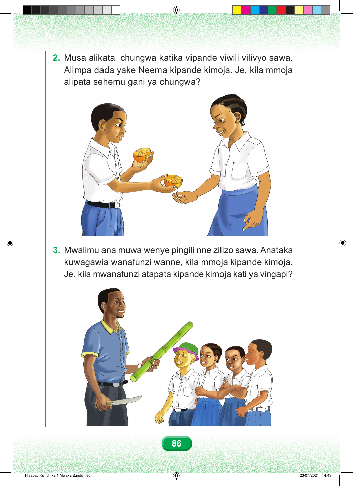

Swali namba mbili. Musa alikata chungwa katika vipande viwili vilivyo sawa. Alimpa dada yake Neema kipande kimoja. Je, kila mmoja alipata sehemu gani ya chungwa? Swali namba tatu. Mwalimu ana muwa wenye pingili nne zilizo sawa. Anataka kuwagawia wanafunzi wanne, kila mmoja kipande kimoja. Je, kila mwanafunzi atapata kipande kimoja kati ya vingapi? 86 Hisabati Kundirika 1 Mwaka 2.indd 86 23/07/2021 14:43